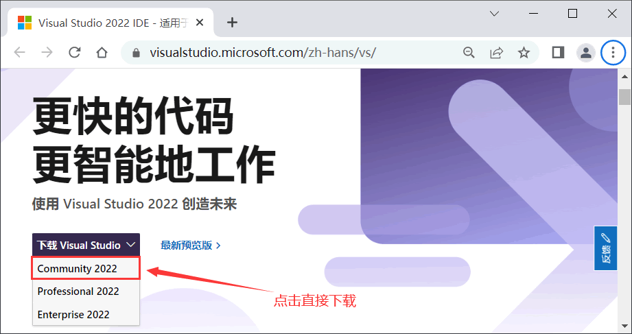
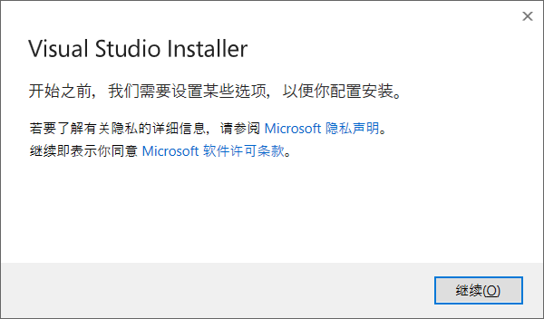
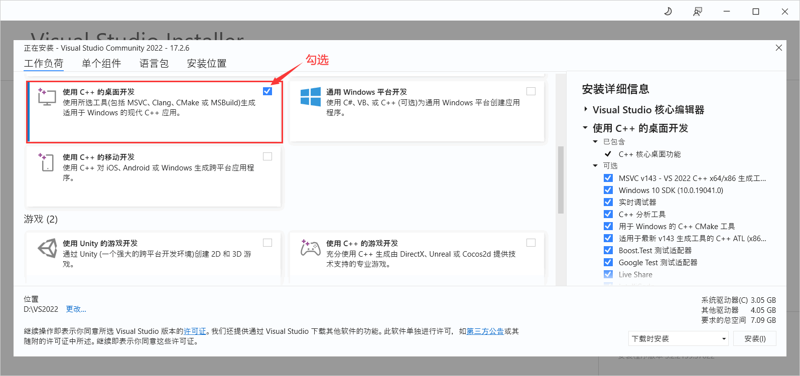
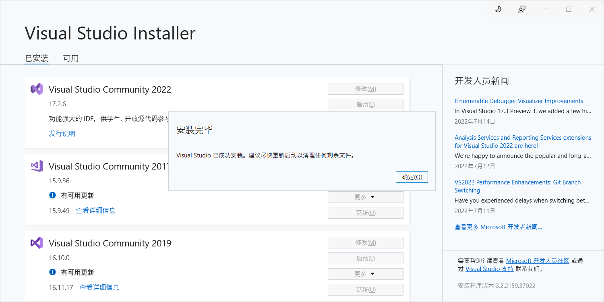
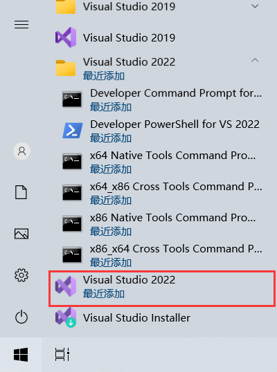

VS2022下载和安装教程（图解版）
Visual Studio（简称 VS）是微软开发的一款 IDE，支持多种编程语言（C/C++、Python、C#、JavaScript 等），实际开发中大家都在用。
微软每隔一段时间（一般是两年）就会对 VS 进行升级，发布新的版本。截止到 2022 年，最新的 VS 版本就是本节教大家下载和安装的 VS2022。
和先前的各个 VS 版本一样，VS2022 细分为三个版本，分别是：
对于大部分程序开发，以上版本区别不大，免费的社区版一样可以满足程序员需求，所以我推荐大家使用社区版，无需破解，轻松安装，直接就能用。
按照图 1 进行操作，会得到一个名 VisualStudioSetup.exe 的可执行文件，接下来就可以安装 VS2022 了。
2) 点击“继续”，待安装环境准备好后，会弹出如下的窗口：
除了支持 C/C++ 开发，VS2022 还支持 C#、F#、Visual Basic 等编程语言，没有必要安装所有的组件。学习 C/C++，只需要安装 “使用C++ 的桌面开发”，右侧的【安装详细信息】版块保持默认即可。
VS2022 体积较大，不建议安装在系统盘（通常是 C 盘），可以选择其它盘（比如图中选择的 D 盘）。
一切选择完成后，点击“安装”按钮开始安装。安装过程可能需要一段时间，请读者耐心等待。
3) 看到下图的提示，表明 VS2022 已经安装成功，接下来就可以启动 VS2022 编写 C/C++ 程序了。
点击 Visual Studio 2022，就可以打开使用了，请猛击《VS2022使用教程（使用VS2022编写C语言程序）》系统学习如何用 VS2022 运行 C 语言程序。
微软每隔一段时间（一般是两年）就会对 VS 进行升级，发布新的版本。截止到 2022 年，最新的 VS 版本就是本节教大家下载和安装的 VS2022。
下载VS2022
直接猛击这里，前往微软官网下载 VS2022 的安装包。

图 1 VS2022 下载页面
图 1 VS2022 下载页面
和先前的各个 VS 版本一样，VS2022 细分为三个版本，分别是：
- 社区版（Community）：免费提供给单个开发人员、开放源代码项目、科研、教育以及小型专业团队！大部分程序员（包括初学者）可以无任何经济负担、合法地使用 VS2022 了。
- 专业版（Professional）：售价 45 美元/月。
- 企业版（Enterprise）：售价 250 美元/月。
对于大部分程序开发，以上版本区别不大，免费的社区版一样可以满足程序员需求，所以我推荐大家使用社区版，无需破解，轻松安装，直接就能用。
按照图 1 进行操作，会得到一个名 VisualStudioSetup.exe 的可执行文件，接下来就可以安装 VS2022 了。
安装VS2022
1) 双击启动 VisualStudioSetup.exe，开始安装 VS2022：

图 2 开始安装 VS2022
图 2 开始安装 VS2022
2) 点击“继续”，待安装环境准备好后，会弹出如下的窗口：

图 3 选择要安装的模块
图 3 选择要安装的模块
除了支持 C/C++ 开发，VS2022 还支持 C#、F#、Visual Basic 等编程语言，没有必要安装所有的组件。学习 C/C++，只需要安装 “使用C++ 的桌面开发”，右侧的【安装详细信息】版块保持默认即可。
VS2022 体积较大，不建议安装在系统盘（通常是 C 盘），可以选择其它盘（比如图中选择的 D 盘）。
一切选择完成后，点击“安装”按钮开始安装。安装过程可能需要一段时间，请读者耐心等待。
3) 看到下图的提示，表明 VS2022 已经安装成功，接下来就可以启动 VS2022 编写 C/C++ 程序了。

图 4 VS2022 安装完成
图 4 VS2022 安装完成
打开VS2022
安装成功后，可以在开始菜单里找到 VS 2022：

图 5 成功安装的 VS2022
图 5 成功安装的 VS2022
点击 Visual Studio 2022，就可以打开使用了，请猛击《VS2022使用教程（使用VS2022编写C语言程序）》系统学习如何用 VS2022 运行 C 语言程序。
关注公众号「站长严长生」，在手机上阅读所有教程，随时随地都能学习。内含一款搜索神器，免费下载全网书籍和视频。

微信扫码关注公众号